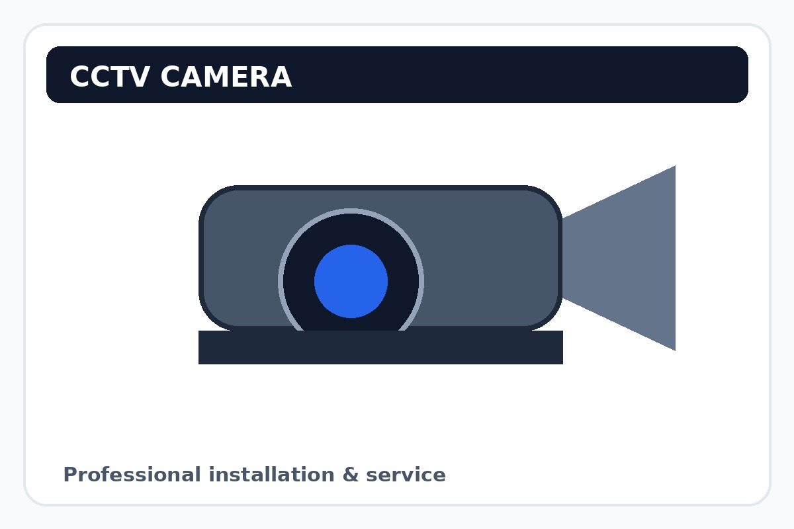
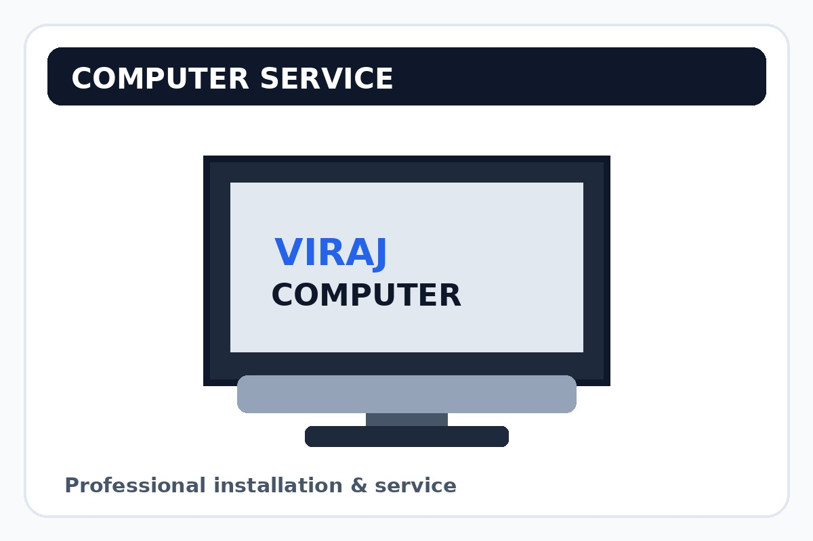

📹
CCTV Installation
Camera selection, installation, cabling, DVR/NVR configuration and mobile live-view setup.
Sales • Installation • Repair • Maintenance — professional CCTV, computer and networking support from Viraj CCTV & Computer Services.

From installation to after-sales service, we help keep your systems running.
Camera selection, installation, cabling, DVR/NVR configuration and mobile live-view setup.
Camera, DVR/NVR, HDD, power supply and connectivity troubleshooting.
Desktop setup, OS/software support, upgrades, repair and regular maintenance.
LAN setup, router configuration, structured cabling and connectivity support.

Tell us what you need and we can help you choose the right setup.